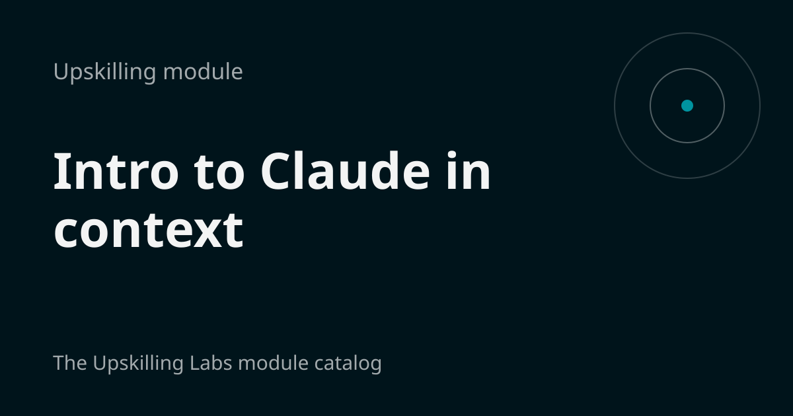

Not yet reviewed. Nobody has checked this learning material yet, so treat it as a draft.
About this module
The module's metadata, from the front matter of modules/intro-to-claude-in-context.md.
- Learning outcome
- Set Claude up with your repo and README, ask for one change, read the diff, and undo it if it's wrong.
- Kind
- Upskilling module, for learners
- Output
- Workshop, has an output. One small change to your own project, made with Claude, that you read and accepted line by line.
- Stage
- During a Cycle
- Scale
- 1:1, 1:few
- Delivered by
- A participant who has used Claude on a Cycle project
- Maintained by
- a C04 maintainer, a builder in residence
- Reviewed by
- Not yet
- Timing
- When stuck, After an attempt
- Learner stage
- interested, involved
- How support fades
- After the first change, the helper only asks questions. By the third, the participant works alone.
- Maps to
- Pair programming
- Time
- 45 minutes
- Prerequisites
- GitHub, from working alone to working as a team
- Scope
- Cohort-specific
- Tags
- claude, prompting
- Status
- draft
- Optional
- Yes, like every module in the catalog
Made-up example for the prototype, formed from made-up situation logs. Not reviewed. C04 uses Claude. Whether other coding agents are allowed is open.
Overview
"Ask the AI" only helps once the AI knows what you're working on. A coding agent like Claude does its best work when it can see your repo and your README first, and when you ask for one small thing at a time. Big requests ("fix the page") get big answers you can't check.
Exercises
- Alone: open your project in Claude and ask it to explain the README back to you. Correct anything it got wrong.
- Alone: ask for one change you could describe in a sentence. Read the diff before you accept it.
- With others: show a teammate the change and how you'd undo it.
For facilitators
Sit beside, not in front. If someone asks "what should I ask it," ask them what they're stuck on, and have them type that. Let a big request go wrong once, then show how to get back to the last commit.
Resources
- Claude Code documentation
- Your Cycle's "Work with Claude" links in the pod README
Formed from
The situation logs this module grew from: what the problem was and what worked.
The problem. I was told to "ask the AI," but I didn't know what to ask, and the answers were about a different project than mine.
What worked. A teammate showed me how to give Claude the repo and our README first, then ask one question at a time. Working through it together helped more than asking alone.
The problem. Two participants asked Claude to "fix the page" and it rewrote far more than they wanted. They didn't know how to get back to what they had.
What worked. Asking for one small change at a time, and reading the diff before accepting it. We also found their last commit, which got them back.